Player's Quick Reference
A plain-language answer to the questions that come up most at the table, with the exact roll for each one. See rules.md for the full rules text.
How Do I Use a Skill?
Every Skill has a default Attribute/Element - that's what you use unless you challenge it. Persuasion defaults to Fire: normally you're leaning on Presence, working someone with charisma and drive. But say you're using Persuasion to lean on an informant and want to play it cold instead of warm - you could challenge the default and use Earth, because your character has the Soak Descriptor Unyielding - you're not charming this person, you're standing immovable until they crack. A challenge needs a real, established piece of your character (a Descriptor) backing it up, not an excuse invented on the spot, and the GM has final say on whether it holds. Add whichever Attribute applies (the default, or the one you successfully argued for) to the Difficulty the GM sets for the task, then roll.
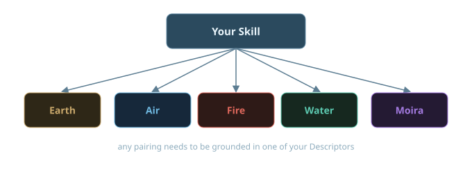
Equal to or under your target number is a success. Over it is a failure. A roll of 2 (both dice show 1) is always a critical success, and a roll of 20 (both dice show 10) is always a catastrophic failure - no matter what your target number was.
No applicable Skill for the task? You still roll, but the Attribute doesn't apply - your target number is just the Difficulty on its own (0-10).
How Do I Use My Resources?
Each Resource you own - say, Wealth - has a free tier: anything within its Level's own description just happens, no roll needed. It's only when you want to reach past that free scope that you roll a Resource Check. The GM sets a Resource Index from 1 to 6 for how far beyond your Resource's ordinary reach the ask is - it inverts just like Defense, so a lower Resource Index is easier (1 adds 9 to your target) and a higher one is harder (6 adds only 4).
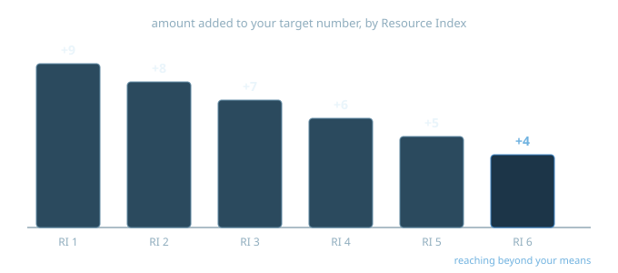
Say your Wealth is Level 3 and you want to swing something past what Level 3 normally covers - the GM calls it a Resource Index of 3. Your target number is 3 + (10 − 3) = 10. Roll 2d10: 10 or under, the money comes together and nothing else happens. Over 10, you still pull it off - a Resource Check never stops you from getting what you were after - but your Wealth drops to Level 2 until the start of next Month, stretched thin from calling in favors and draining accounts.
Reaching beyond your means: you can attempt a Resource Index up to 2 higher than your Resource's current Level - anything further out of reach can't be attempted at all. Reaching that far always gets you what you wanted, but drops the Resource all the way to 0 for the Month, win or lose - unless you roll a critical success, which lets you off with no cost at all. Resource Index 6 always counts as reaching that far, no matter how high your Resource actually is - it's the one case even a critical success can't save.
How Does Fate Work?
Fate Tokens are what you spend to bend a bad roll, dodge a bad situation, or just declare that something goes your way. Spending one costs you the token and nothing else - no follow-up roll, no risk to any other pool.
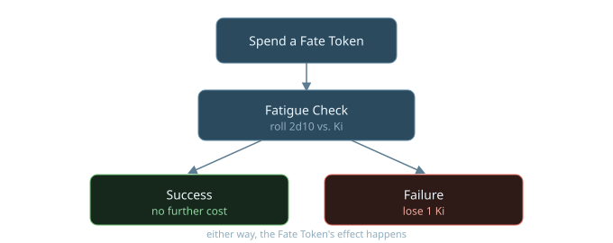
Two limits shape how you use them, and both come from your Stamina, at two scales. You can hold Stamina × 3 of them - anything earned while you're already at that ceiling is lost rather than banked - and you can spend Stamina of them in a single Scene. Whatever your score, that's about three Scenes' worth of Fate Tokens in hand and no more.
A single Fate Token buys one of five things, flat cost every time: ignore one of your Flaws for the rest of the scene, succeed at a roll automatically with no dice involved, gain Advantage on a roll you're not already trained for, shrug off a bad status like Flustered or Exhausted, or refill your Ki pool completely, right there in the moment.
Want something bigger than that - bending the actual fiction, not just a roll? That's Kotodama: spend Fate Tokens to declare a fact and have the world bend to make it true. The bigger the claim, the farther it reaches, and the harder it'd be to explain away after the fact, the more it costs - and multiple characters can pool their tokens together for something none of them could manage alone.
You can only spend Fate Tokens so many times per Scene - your Stamina score sets that cap, and three times your Stamina sets how many you can hold in the first place. And every token you spend hands the GM one back, to spend on complications and twists of their own - spending big doesn't just cost you, it hands the GM more to work with too.
How Does Ki Work?
Ki is your body's own reserve of extra capability - separate from Fate Tokens, and not something you earn moment to moment. It's deliberately common: take your strongest Element and add 8. Nothing else about your build touches it, so every character in the game lands between 13 and 18, and the frail specialist draws on the same deep tank as the walking wall.
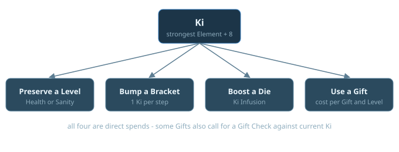
You spend Ki three ways, all direct spends with no roll involved. 1 Ki preserves a Health Level or Sanity Level that would otherwise be lost - cancelling the hit before it happens. Poise works differently: Ki can't stop a Poise hit from landing, but once you're at 0 Poise, 1 Ki refills it straight back to full. 1 Ki also bumps your Action Bracket up a step - Slow to Normal, or Normal to Fast, with 2 Ki jumping both steps at once. And 1 Ki per die boosts an attack die, adding your own Ferocity, Presence, or Psyche to that die's result, decided before you see how any of the dice actually land.
Most Gifts cost Ki to use as well, called out per Gift and per Level, and some of them additionally call for a Gift Check - see below.
None of the three direct spends costs you anything but the Ki - no roll, no risk, and none of them count against your Stamina's per-Scene Fate Token cap.
A Short Rest gives back Klotho Ki (minimum 1). A Full Night's Rest fills Ki all the way back up.
How Does Combat Work?
Everyone rolls Initiative once, at the very start of the fight - that order holds for the whole thing, no re-rolling each round. From there, every fight runs on the same loop, whether the attack is a fist, a threat, or a mind reaching where it isn't welcome: declare how you're playing the round, act in that order, roll to see if you land the hit, then roll to see how much of it actually gets through.
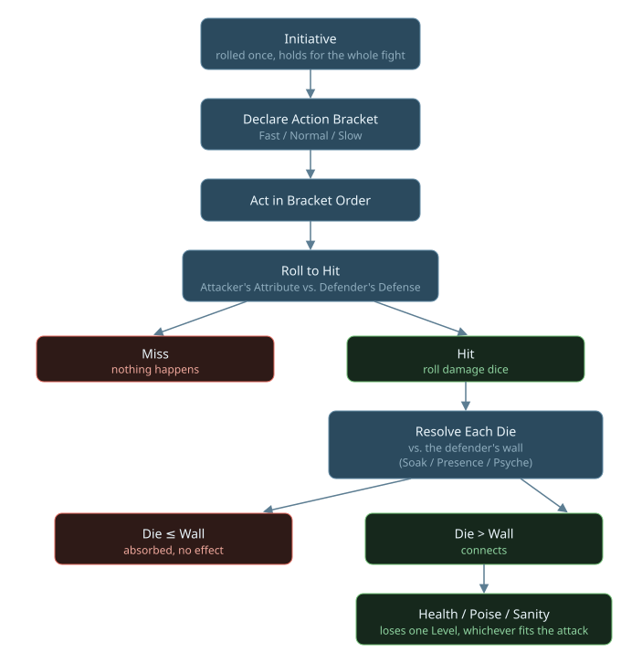
The shape of every fight, start to finish. Each piece gets its own answer below.
The rest of this page walks through each step of that loop in detail - what "Attribute vs. Defense" actually means, how the damage dice work, and how you recover afterward.
How Does Initiative Work?
Roll once, right at the start of the fight - that order holds for the whole thing, no re-rolling each round.
This is one of the only rolls in the game where higher is better, not lower - along with damage dice (a higher result is more likely to connect), it's the exception to the roll-under shape almost everything else in 20 Below uses.
How Do Action Brackets Work?
Once Initiative is set for the fight, every round starts the same way: before anyone acts, each character quietly picks one of three Action Brackets for that round. It decides both how many actions you get and when you act relative to everyone else.
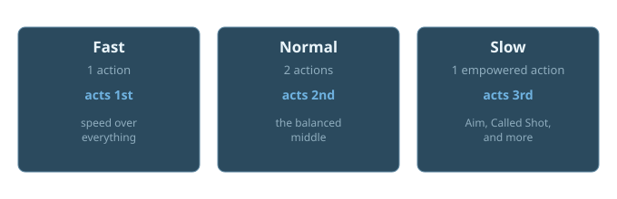
Fast trades action count for speed - a snap shot, a move, a single Skill use, but only the one action. Normal is the balanced middle: two actions, like moving and then attacking, acting second. Slow trades speed for power - still just one action, but it allows called shots and gets Advantage on the attack; the tradeoff is going last.
Once everyone's declared, the round plays out in three passes: every Fast character acts first, then every Normal character, then every Slow character - within each pass, whoever rolled higher on Initiative goes first.
Spending 1 Ki bumps your declared Bracket up a step - Slow to Normal, or Normal to Fast - buying back speed at the cost of the resource. 2 Ki bumps two steps at once, straight from Slow to Fast.
How Do I Attack?
Every attack - a punch, a threat, a mind reaching where it isn't welcome - starts the same way: roll your Attribute against the target's Defense. No Skill involved, just the attacker's Attribute against how hard the target is to touch.
Which Attribute? Earth, Air, Fire, or Water - whichever matches how you're actually attempting the attack, not your weapon, and never Moira. Smashing through a guard is Earth. A precise thrust through an opening is Air. A furious, relentless assault is Fire. Reading your opponent and striking the moment they overextend is Water. Two characters swinging the exact same sword can use two different Attributes here, because the element describes the approach, not the tool in your hand.
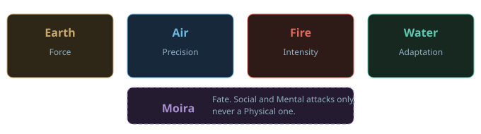
Equal to or under your target number, you hit and move on to rolling damage. Over it, you miss - nothing happens this time. The same critical rule applies as anywhere else: a roll of 2 is always a critical success, a roll of 20 is always a catastrophic failure, no matter the target number.
A critical hit doubles your damage dice. A weapon that normally throws 5d10 throws 10d10. The extra dice are ordinary dice facing the same wall, so Ki still buys them through one - a critical against heavy armour costs you as much as any other attack would. Crossing zero still applies, so however many connect, one attack can only ever bring a target to 0.
Skill tiers that widen the critical range don't apply to attacks, because an attack uses no Skill - a critical hit lands on a natural 2 for everyone, expert or not. What does move the odds is Advantage, which a Slow action grants: it takes a critical from a 1% chance to roughly 2.8%.
Declare your approach before you roll, not after seeing how the dice land. And this choice only feeds the to-hit roll - it doesn't change what category the attack is (Physical, Social, or Mental) or what damage your weapon actually deals.
How Do I Deal Damage?
Once your attack hits, roll a handful of dice - how many depends on what you're using (a weapon, a Gift, whatever fits the attack). Check each die one at a time against the target's toughness for that kind of attack: Soak for a Physical hit, Presence for a Social one, Psyche for a Mental one.
A die higher than that number connects. A die equal to or lower just bounces off, no effect. Each connecting die costs the target one Health Level, Poise, or Sanity - whichever fits the attack. A heavier weapon doesn't hit harder per die, it just rolls more dice - more independent chances for one of them to connect.
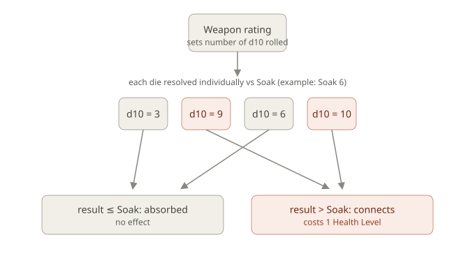
Soak 6, four dice rolled: 3 and 6 bounce off, 9 and 10 connect - two Health Levels lost from this one attack.
A wall stat of 10 fully blocks every unboosted die, guaranteed. Spending 1 Ki per die lets you boost that specific die, adding your own Ferocity (Physical), Presence (Social), or Psyche (Mental) to its result. Roll the dice first, then choose which to boost - so nothing is spent on a die that already got through, or on one too far under the wall to save. Enough boosted dice can crack even a maxed-out wall.
What Happens to My Health?
Health Levels aren't a number that ticks down - think of them as a row of boxes, each one able to absorb exactly one connecting hit before it's gone. Everyone starts with 5, plus whatever you've put into your Health sub-stat.
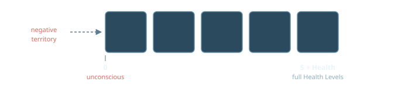
At 0, you're unconscious and can't act. A single attack can never carry you straight past 0 into negative territory - even a huge hit just lands you exactly at 0, no further, no matter how many dice connected. Once you're already at 0, though, any later attack can only take one more Level, no matter how many dice connect that time.
Health Levels can still go negative from there - drop low enough (at or below your negative Health sub-stat) and you die. Normally this plays out off-screen, since an unconscious character can't act or know what's happening; Unstoppable is the one Boon that keeps you conscious and acting through that same range instead of blacking out at 0.
Spending 1 Ki cancels the loss of one Health Level entirely - 1 Ki per Level, and you can spend more than one at once. Dropping to 0 anyway leaves a permanent scar, purely cosmetic; dropping below 0 can instead impose a real Flaw until you're fully healed back to 0. The Healing and Regeneration Gifts both grant immunity to the scar, for whoever they're used on.
Recovery: a Short Rest heals half your Health sub-stat, rounded up (minimum 1). A Full Night's Rest heals you back to full. If you're already below 0, healing is slower - 1 Health Level per rest, Short or Full, until you're back up to 0. Normal recovery picks up again from there.
What Happens to My Poise?
Poise is the same row-of-boxes shape as Health, but it tracks your composure under Social attack instead - cutting words, humiliation, pressure. You start with 5, plus whatever you've put into your Presence sub-stat.
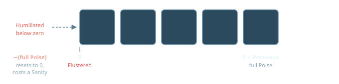
The one real difference from Health: Poise can't go below 0. Once you're there, you're already as Flustered as it gets - further connecting Social dice just don't do anything more.
Flustered gives you Disadvantage on all Social rolls, and on anything else where composure matters, for the rest of the Scene. You can spend an action to roll Presence against a Difficulty to shake it off early - succeed, and the condition ends right there.
Ki works differently here than it does for Health: it can't stop a Poise hit from landing in the first place. But once you're at 0, spending 1 Ki refills your Poise straight back to full.
Recovery: a Short Rest heals half your Presence, rounded up (minimum 1). A Full Night's Rest heals you back to full. Dropping to 0 leaves a purely cosmetic social tell - a nervous habit, a reputation quirk - no mechanical effect, and no Gift grants immunity to it.
What Happens to My Sanity?
Sanity is the same row-of-boxes shape as Health, tracking your grip on your own mind under Mental attack. You start with 5, plus whatever you've put into your Psyche sub-stat.
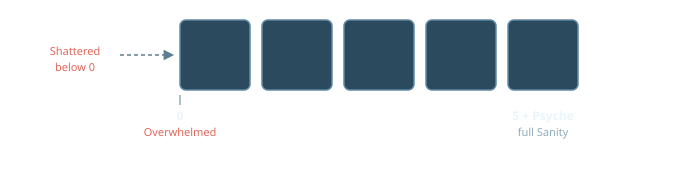
Sanity crosses zero exactly like Health does - a single attack can never carry you straight past 0, and once you're already at 0, any later attack can only take one more Level no matter how many dice connect. Unlike Poise, though, Sanity keeps going into negative territory.
At 0, you're Overwhelmed: a temporary bad mental trait plus Disadvantage on your rolls, but you can still act on your own. It clears once you're away from whatever caused it and get a chance to rest, or by spending 1 Ki, which also fills Sanity back to full.
Below 0, you're Shattered: panicky, babbling, unable to act alone - someone has to lead or drag you. It clears the same two ways, removal-plus-rest or 1 Ki, but either one only brings you back to 1, not full; normal recovery picks up from there. Dropping below 0 always leaves a permanent mental scar, even if you recover with Ki.
Spending 1 Ki can also cancel the loss of a Sanity Level outright, the same as Health - 1 Ki per Level, before the hit ever lands. That's separate from the Ki spend above, which only comes into play once you're already at 0 or below.
Recovery: a Short Rest heals half your Psyche, rounded up (minimum 1). A Full Night's Rest heals you back to full.
How Do I Use a Gift?
There's no single "Gift roll" - using a Gift means checking that Gift's own entry for which of three tools it actually calls for, since not every Gift uses all three, or even any of them.
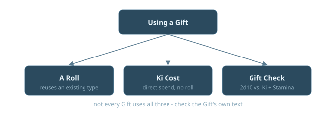
Some Gifts need an actual roll, and when they do, it's always a roll you already know how to make: a weapon-style attack, the same self-paired Presence or Psyche attack shape as any Social or Mental attack, or a plain Attribute + Difficulty check. Some Gifts have a flat Ki cost instead - a direct spend, no roll at all, called out explicitly in that Gift's own text.
And some Gifts risk a Gift Check: a resource-risk roll against the Ki you have left right now, not the Ki you started with.
Succeed, and using the Gift costs you nothing extra. Fail, and you lose 1 Ki until it's refilled - either way, the Gift's effect still happens. Because the check reads your remaining pool, your Gifts are dependable while you're fresh and get unreliable once you've spent the day.
These three tools aren't exclusive - a single Gift can call for more than one at once, say an attack roll to land it plus a Gift Check to actually trigger the effect. Always check the specific Gift and Level you're using; there's no one universal formula that covers all of them.
What Are Advantage and Disadvantage?
Both change how many dice you roll, not your target number. Since 20 Below is roll-under, lower is always better - so Advantage helps you and Disadvantage hurts you, but they work through the exact same mechanism.
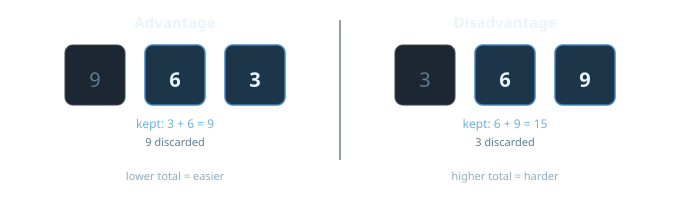
You need a specific rule to actually grant either one - an Expert or Master Skill Training Tier, fighting with your off-hand, a Fate Token spend, and so on. Nothing gives you Advantage or Disadvantage just because a scene feels tense.
Both are binary - stacking more sources of the same one doesn't compound it into something bigger. Have sources of both at once? They cancel 1-for-1, and whatever's left over after canceling is what applies. Equal sources on both sides cancel out completely, and you just roll normally.
How Far Can I Move?
Distance in a fight isn't measured on a grid - it's tracked in four loose Range Bands: Melee, Close, Near, and Far. The GM assigns them per scene rather than counting squares, and they're what weapon reach, targeting, and spotting all key off of.
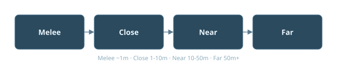
You can move up to your Movement Rate as part of a Fast action's one action, or as the move component of a Normal action. As a rough conversion, not a strict count, spending a full Movement Rate shifts you one Range Band - though the GM can just narrate a shift directly when the fiction obviously calls for it, without making anyone do the math.
What Does Armor Do?
Armor doesn't add to your Soak - it's its own separate layer, with its own Hardness (a threshold on the same 0-10 scale as Soak) and its own Health Levels, tracked apart from yours. Every piece covers one of two Zones: Body or Head.
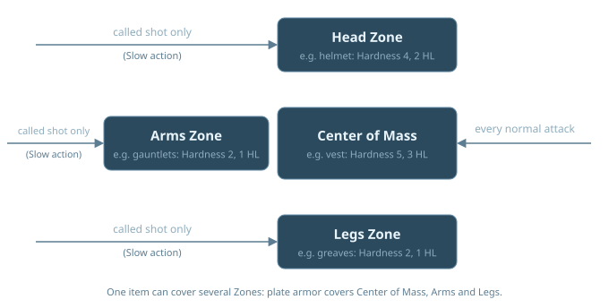
While it still has Health Levels left, armor intercepts every die aimed at the Zone it covers, before your own Soak ever gets involved.
Either way, you take nothing while the armor holds - a die that beats Hardness still doesn't touch you, it just costs the armor a Health Level instead. An armor item never loses more than 1 Health Level per attack, no matter how many dice beat its Hardness that time.
Once an armor item hits 0 Health Levels, it's broken - it stops covering its Zone entirely, and dice resolve straight against your own Soak until it's repaired. Ki Spend to Preserve only ever protects your own Health or Sanity (or, for Poise, its own separate refill-after-0 rule) - none of that can prevent or undo an armor Health Level loss. And armor doesn't stack: own two items covering the same Zone, and only one is actually worn there at a time.
How Do Called Shots Work?
Normally an attack automatically resolves against a target's Body-Zone armor, and their Head-Zone armor does nothing to stop it. A called shot flips that - it's the only way to specifically target the Head Zone instead.
Called shots are legal only as a Slow Action Bracket - the same action that already grants you Advantage on the attack. If the target has Head-Zone armor, it - and only it - resolves against the called shot; Body-Zone armor doesn't apply at all. No Head-Zone armor at all just means the shot goes straight through to the target's own Soak.
What Is Distracted?
Taking a Health Level or getting hit by a Kotodama effect while you're resolving a Slow Action Bracket action can break your concentration. When that happens, roll to hold focus.
Succeed, and your action resolves exactly as declared. Fail, and it downgrades to a Normal action instead - you still act, but you lose the called-shot option and the Advantage that made it a Slow action in the first place.
Distracted isn't only a Slow-action thing - a Gift, an environmental hazard, or GM fiat can impose it any time. Outside a Slow action, the same roll applies, but failure just imposes Disadvantage on whatever triggered it instead of downgrading an action. Concentration grants immunity to being Distracted, regardless of the source.
What Is Surprised?
If you haven't noticed a threat before a fight begins, you're Surprised - usually because an opposing Stealth roll beat your Perception, or the GM judges the fiction calls for it.
A Surprised character rolls at Disadvantage on everything - attacks, and any other roll where being ready matters - for the rest of the round they're caught in. It clears automatically once that round ends, no roll needed. Alertness grants immunity to being Surprised while conscious.